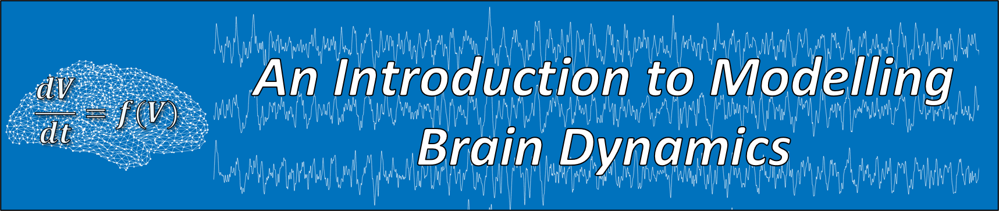

This ongoing workshop was presented online between May 2020 to the present.
The target audience is researchers with a background in neuroimaging, psychology, biology, etc. with no quantitative background.
The workshop was originally to be hosted at Cardiff University Brain Research Imaging Center, but moved to a series of virtual events due to the COVID-19 pandemic.
Description
If you want to learn what is meant by "modelling brain dynamics", have vague ideas for how modelling could be useful with your research but don't know where to begin, or simply think modelling sounds interesting and would like to learn more, this workshop is for you.
Our hands on tutorial consists of four practical sessions aiming to introduce researchers to the methods and concepts used in modelling the brain and cognitive processes.
These tutorials will be followed by two keynote speakers presenting their recent research utilising mathematical models of the brain.
This workshop is a perfect opportunity for you to develop new skills, brainstorm new ideas, and network with the modelling community in CUBRIC to facilitate new collaborations.
Outline of Workshop
- An introduction to dynamical systems, Luke Tait. 4th May, 2020.
- Dynamics in brain networks: application to epilepsy, Marinho Lopes. 15th June, 2020.
- Bifurcations in neural dynamics and cognition, Dominik Krzeminski. 20th July, 2020.
- Inferring models from neuroimaging data, Alex Shaw. TBC.
Plus keynote presentations from external speakers presenting recent research in the field (dates TBC).
Targets
By the end of the workshop you should be able to:
- Understand the advantages and limitations of modelling the brain, and why you might want to do it.
- Implement simple models of brain dynamics such as those measured by EEG, MEG, or fMRI.
- Perform simple analyses of brain models
- Fit brain models to real neuroimaging data